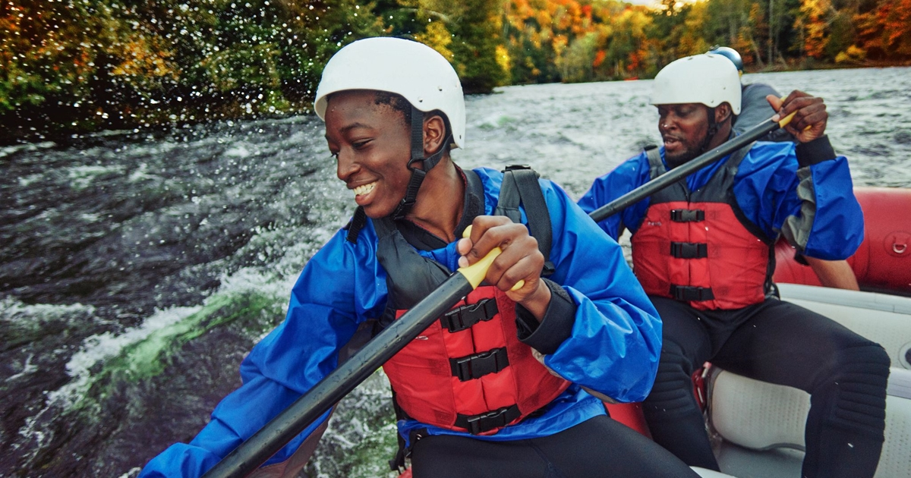

Our Mission
At White Water Rafting, our mission is to ignite a spirit of adventure by providing exhilarating yet safe rafting experiences for everyone—from beginners to seasoned thrill-seekers. We are committed to fostering a deep connection with nature, promoting teamwork, and delivering unforgettable memories. Through expert guidance, eco-conscious practices, and a passion for exploration, we aim to inspire guests to step outside their comfort zones and embrace the thrill of the wild rivers.
History
Founded in 2000 by an outdoor enthusiast with a dream to share the magic of river adventures, White Water Rafting started with one raft, a handful of passionate guides, and an unshakable love for the water. What began as weekend trips with local adventurers quickly expanded as word spread about the incredible experiences we offered.
Over the years, we have grown into one of the region’s most respected rafting companies, offering diverse trips that cater to all skill levels—from tranquil family floats to adrenaline-pumping white-water adventures. Along the way, we became pioneers in safety standards, ensuring every trip is both thrilling and secure.
Our commitment to sustainability is woven into our story. Through partnerships with conservation organizations, we protect the pristine landscapes we explore, ensuring future generations can enjoy them too. Today, we proudly offer guided trips across multiple rivers, welcoming individuals, families, and corporate groups. Our journey continues with each new adventure, guided by a passion for exploration, teamwork, and environmental stewardship.